Leadbox
User Guide for Company Admin
Creating Your Account
Before you can use Leadbox, you need to create an account for your company. This is a two-step process — first you enter your company details, then your personal login details.
Open the Leadbox website. On the login page, click the Create Account link at the bottom of the form.
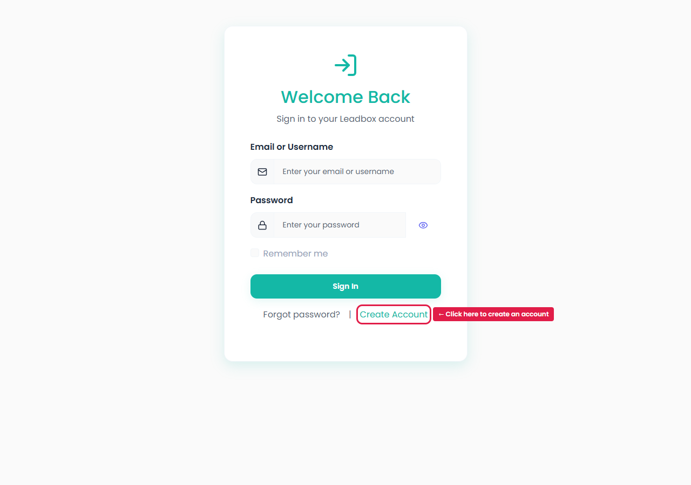
The login page — click Create Account (highlighted in red) to begin registration.
Step 1 — Company Details
You will see a form asking for your company information.
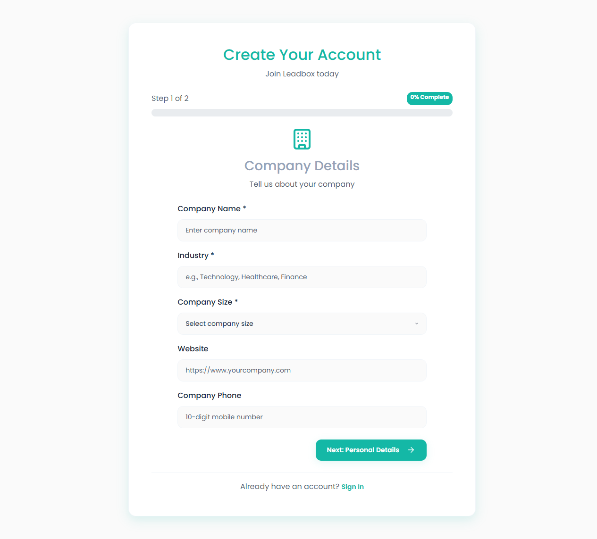
The first step of registration — enter your company details here.
| Field | What to enter | Required? |
|---|---|---|
| Company Name | The full name of your business | Yes |
| Industry | Your industry, e.g. Technology, Healthcare, Finance | Yes |
| Company Size | Select how many employees your company has | Yes |
| Website | Your company website address | Optional |
| Company Phone | Your company's main contact number | Optional |
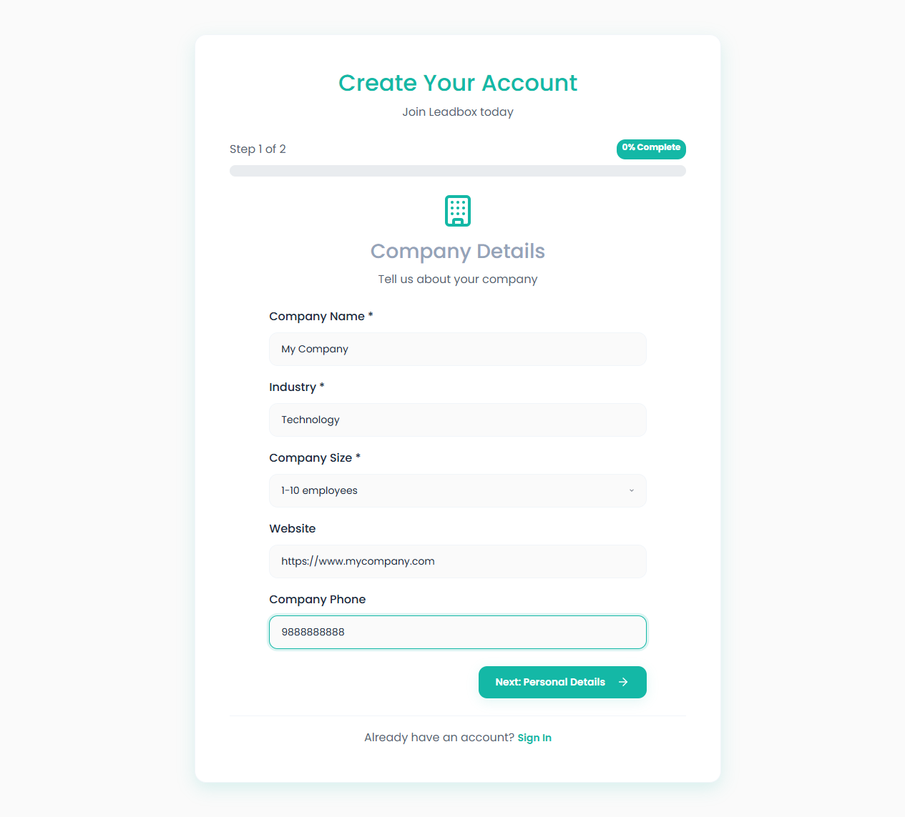
Example of a filled-in Company Details form.
- Fill in your Company Name — this is how your business will appear in Leadbox.
- Type your Industry, for example: Technology.
- Select the Company Size that best matches your team.
- Optionally enter your Website and Company Phone.
- Click Next: Personal Details to continue.
Step 2 — Your Personal Details
Now enter your own name and login credentials. This creates your Company Admin account.
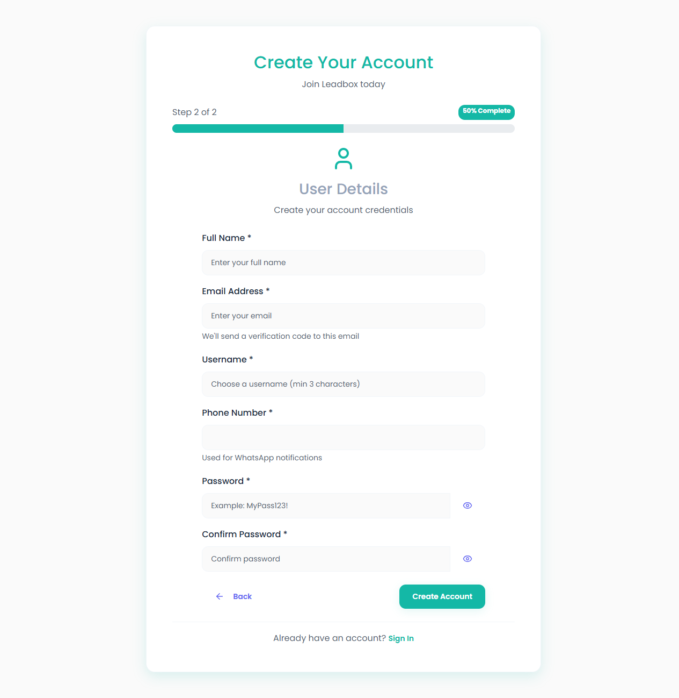
Step 2 of registration — enter your personal and login details.
| Field | What to enter | Required? |
|---|---|---|
| Full Name | Your first and last name | Yes |
| Email Address | Your work email — a verification code will be sent here | Yes |
| Username | A short name you will use to log in (minimum 3 characters) | Yes |
| Phone Number | Your mobile number (used for WhatsApp notifications) | Yes |
| Password | A strong password: at least 8 characters, with uppercase, lowercase, a number, and a special character (e.g. Admin@123) | Yes |
| Confirm Password | Type your password again exactly as above | Yes |
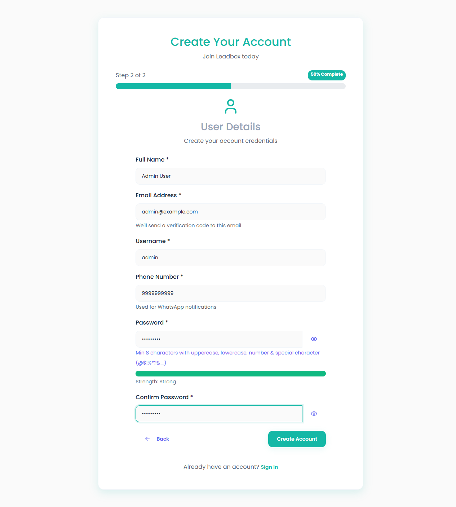
Example of a filled-in User Details form.
- Enter your Full Name as you'd like it to appear in the system.
- Enter your Email Address — make sure it's correct, as a verification code will be sent to it.
- Choose a Username — this is what you'll use to log in.
- Enter your Phone Number.
- Create a Password that meets the strength requirements shown on screen.
- Re-enter the same password in Confirm Password.
- Click Create Account.
Verifying Your Email
After creating your account, Leadbox will send a 6-digit code to the email address you provided. You need to enter this code to confirm your identity.
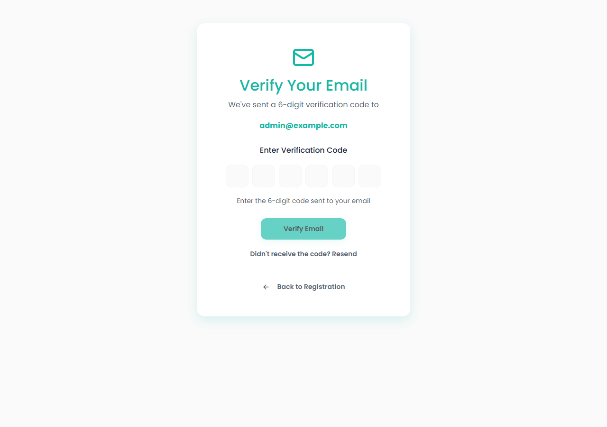
Enter the 6-digit code sent to your email to verify your account.
- Check your email inbox for a message from Leadbox with a 6-digit code.
- Type the code into the six boxes shown on screen — one digit per box.
- Click Verify Email.
- Once verified, you will be taken to the login page.
Logging In
Every time you want to use Leadbox, you will start at the login page. Enter your email and password to get in.
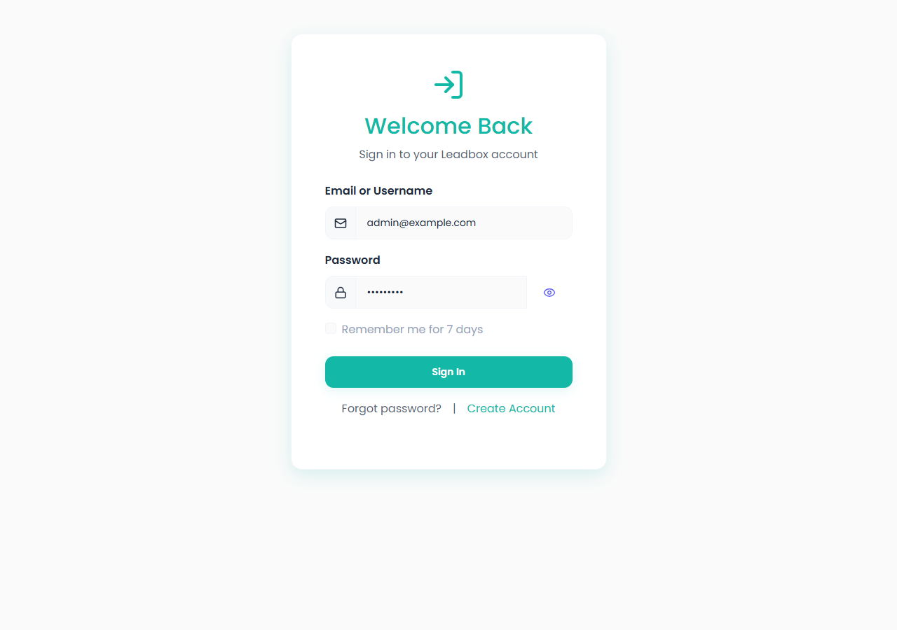
Enter your email and password, then click Sign In.
- Open the Leadbox website. You will see the Welcome Back screen.
- Type your Email or Username in the first box.
- Type your Password in the second box.
- Tick Remember me if you don't want to log in every day.
- Click Sign In.
Your Dashboard
After logging in, you will land on your Dashboard. This is the home screen — it gives you a quick summary of everything happening in your business.
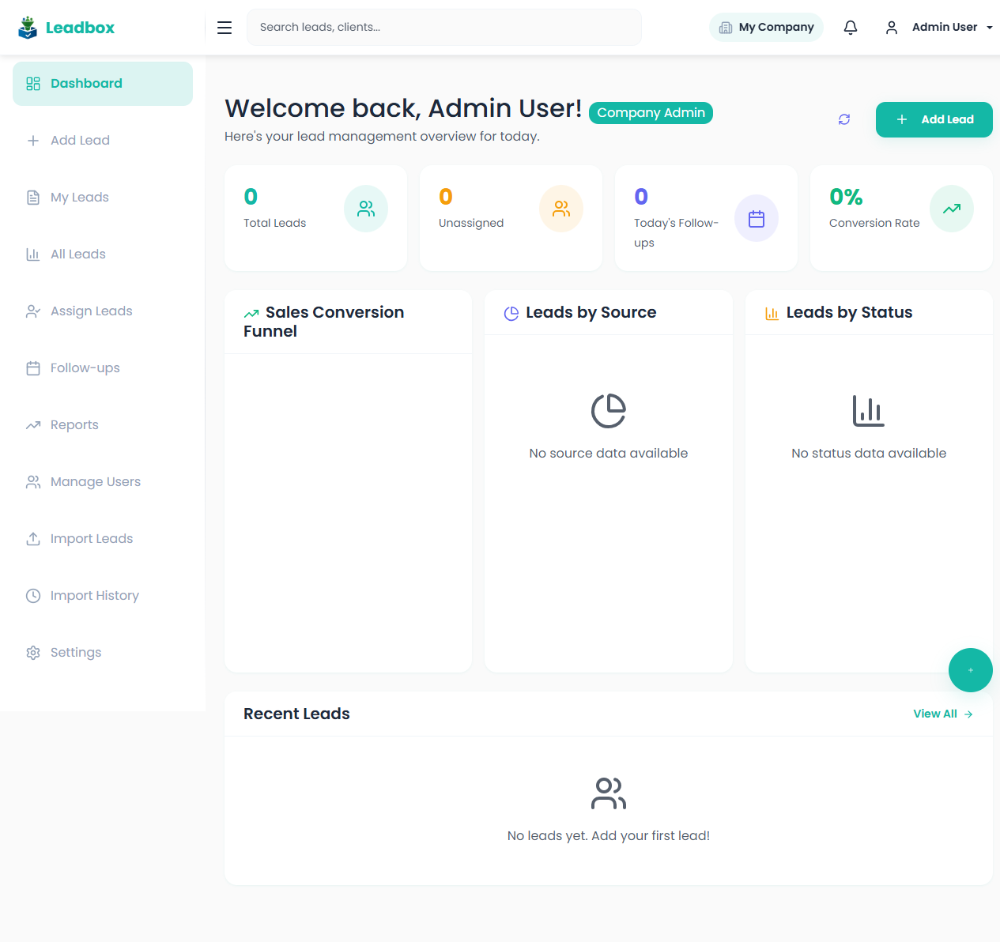
Your Dashboard — a quick overview of all leads and activity.
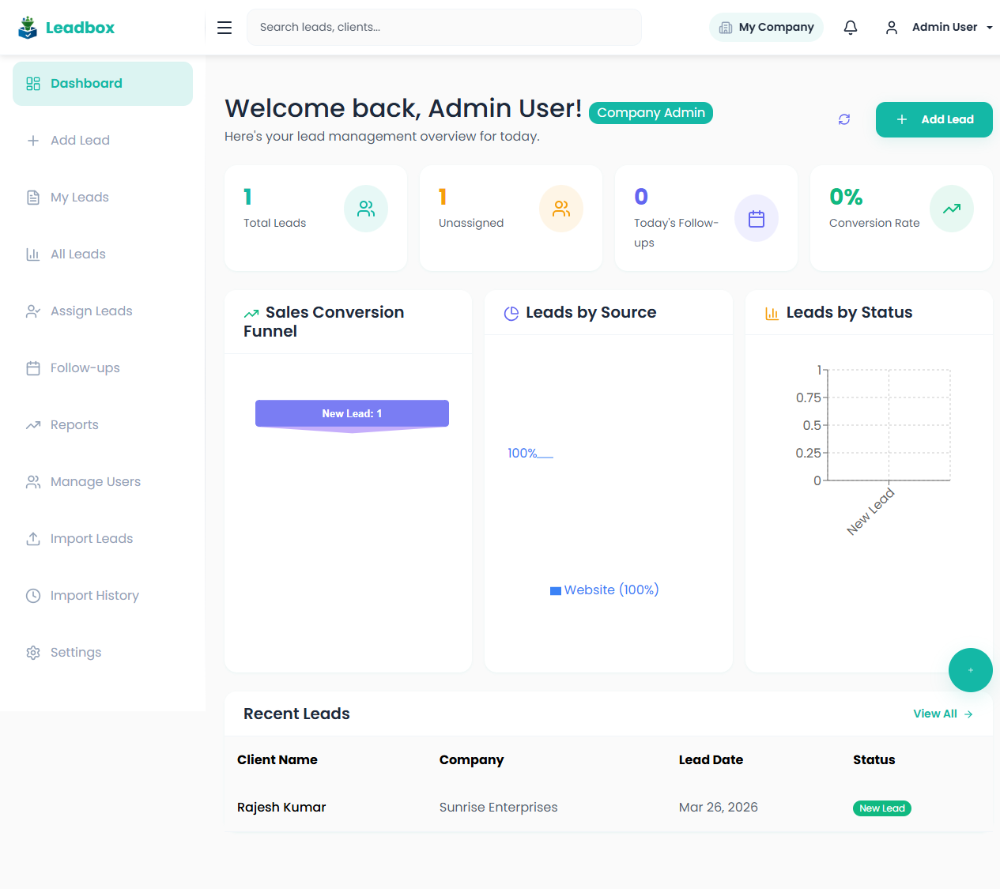
The Dashboard updates in real time as you add leads and your team takes action.
Here is what each section of the Dashboard means:
| What you see | What it means |
|---|---|
| Total Leads | The total number of leads in your company's system |
| Unassigned | Leads that have not yet been given to a team member |
| Today's Follow-ups | Leads that need to be followed up today |
| Conversion Rate | The percentage of leads that turned into customers |
| Sales Conversion Funnel | A chart showing how many leads are at each stage |
| Leads by Source | Where your leads are coming from (website, referral, etc.) |
| Leads by Status | How your leads are distributed by their current stage |
| Recent Leads | The latest leads added to the system |
Settings
Before your team starts working, go to Settings in the left menu to complete two important setup steps.
Company Profile
Complete your company profile so your account is fully set up.
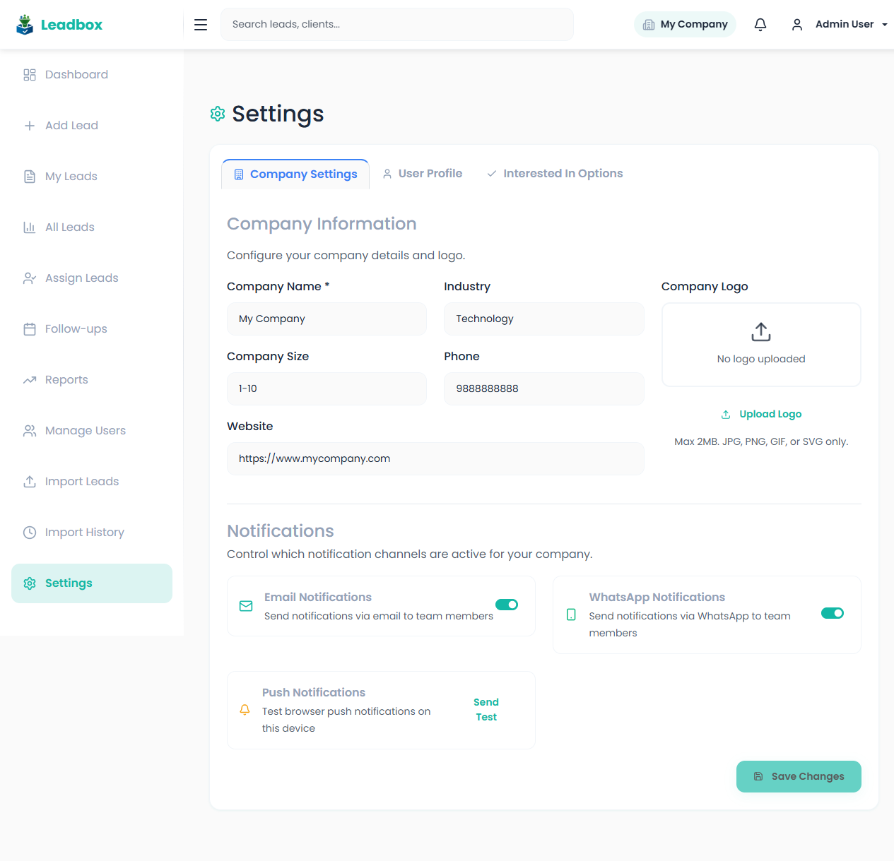
The Company Settings page — update your company information here.
- Click Settings in the left-side menu.
- You will see the Company Settings tab is already selected.
- Update your company name, industry, size, phone, and website if needed.
- To add a company logo, click Upload Logo and choose an image file from your computer.
- You can also turn on or off Email and WhatsApp notifications for your team.
- Click Save Changes when you're done.
Setting Up "Interested In" Options
This is an important step that must be done before your team starts adding leads. "Interested In" options are the products or services your company offers. When adding a lead, your team will select from this list to record what the customer is interested in.
- Click the Interested In Options tab at the top of the Settings page.
- When you first open this tab, the list will be empty as shown below.
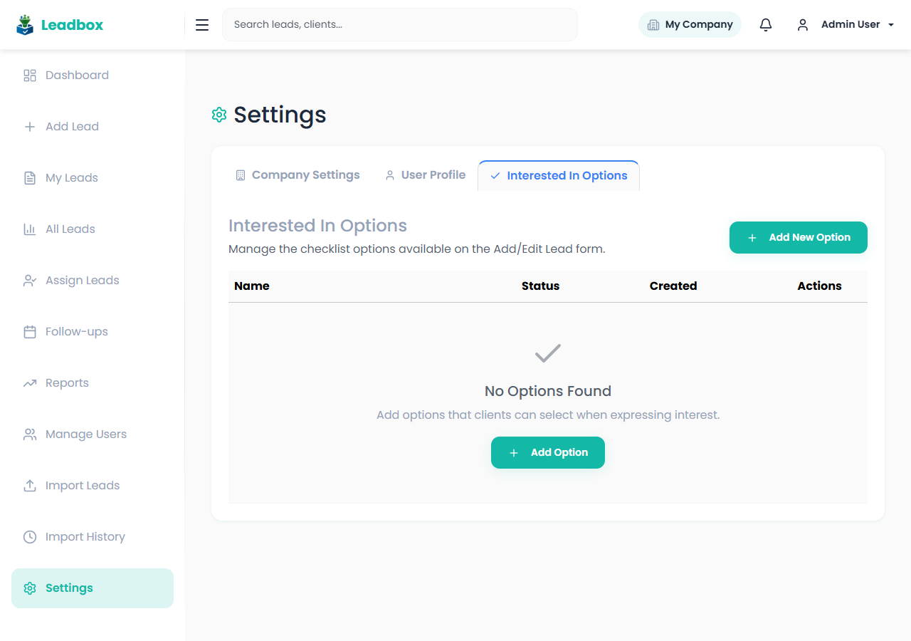
The Interested In Options tab when no options have been added yet.
- Click Add New Option to create your first option.
- Type the name of the product or service in the Option Name box, for example: "Software Development".
- Click Create Option to save it.
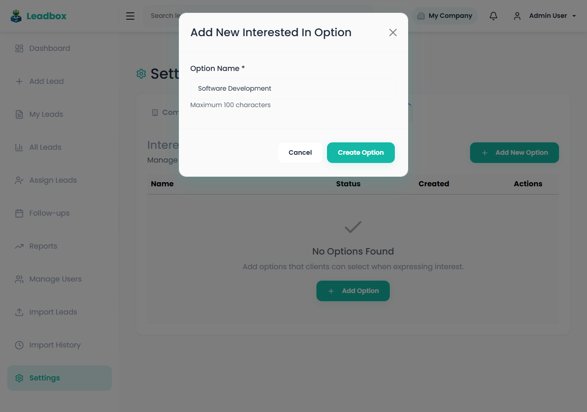
Type the name of the product or service and click Create Option to save it.
- Repeat this for every product or service your company offers.
- Once all options are added, the list will look like this:
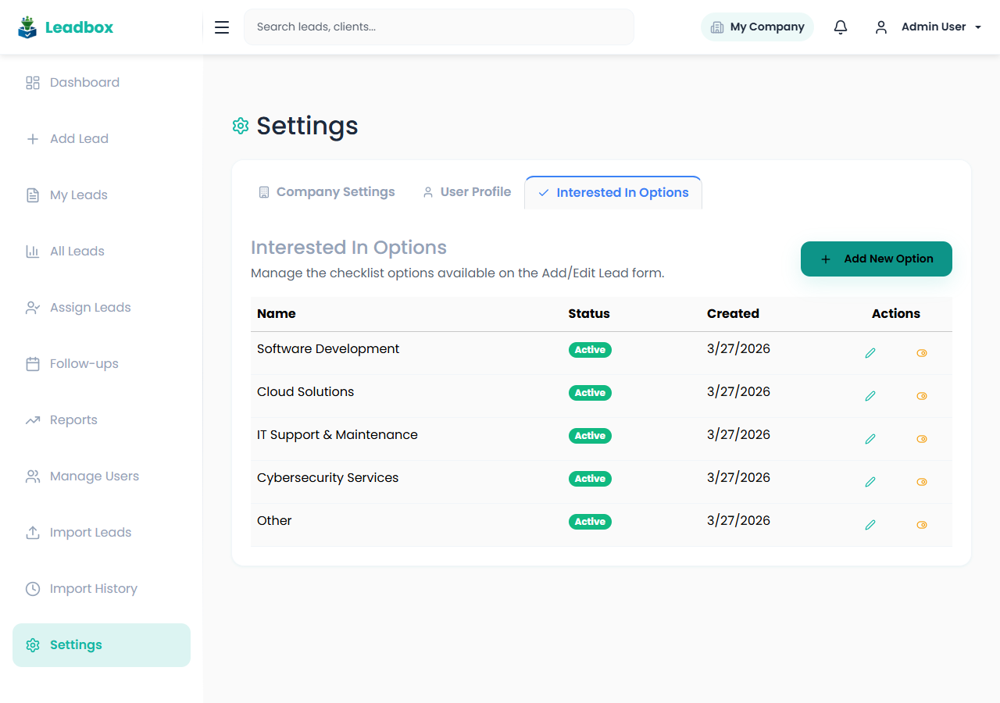
The completed list of "Interested In" options available to your team when adding leads.
You can also Edit or Deactivate any option from the list at any time.
Managing Your Team
Once your company is set up, you can start inviting your team members to Leadbox. Go to Manage Users in the left menu.
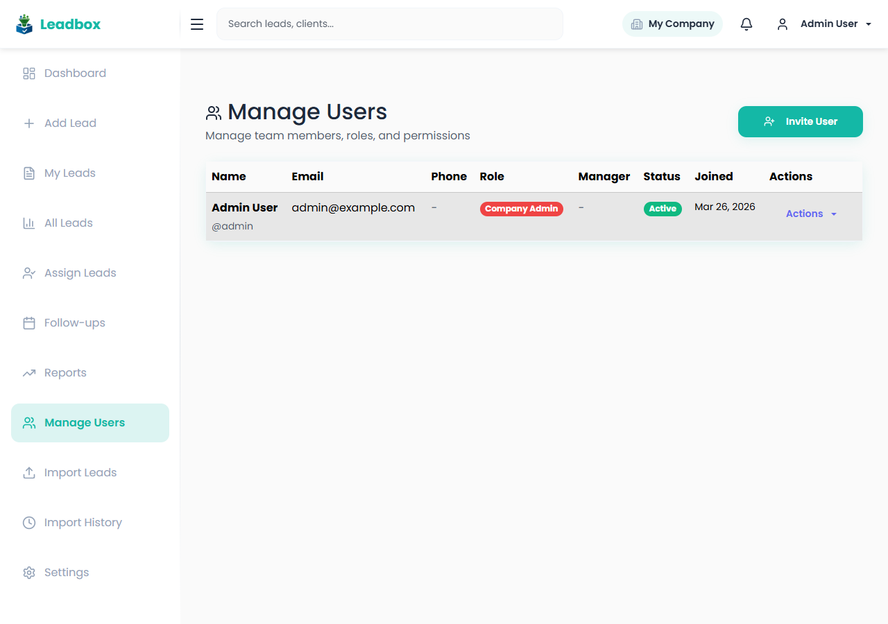
The Manage Users page shows all team members and their roles.
This page shows everyone in your company — their name, email, role, and whether they are active. To add someone new, click Invite User.
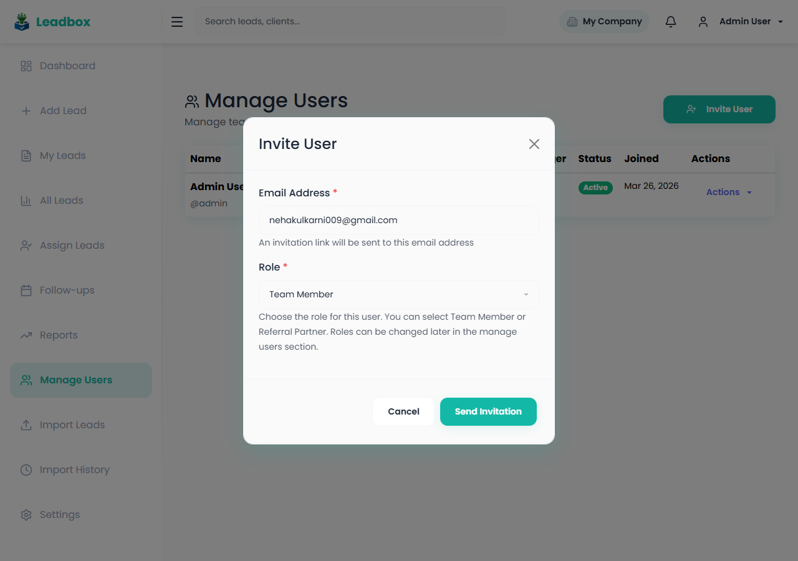
Enter the team member's email and select their role, then send the invitation.
- Click Invite User at the top right of the page.
- Enter the team member's Email Address.
- Select a Role for the team member — there are two options to choose from:
Role Who is it for? Team Member A salesperson who adds and manages their own leads. Referral Partner Someone who refers leads to your team but does not manage them directly. - Click Send Invitation. The team member will receive an email with a link to create their account.
Leads
A lead is a potential customer — someone who has shown interest in your products or services. This section covers everything you need to know about adding, viewing, and managing leads.
7.1 Adding a Lead
To add a lead, click Add Lead in the left menu.
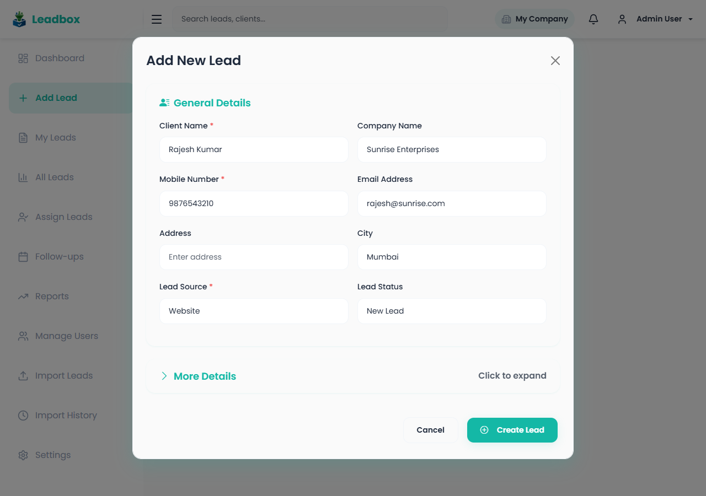
Fill in the lead's details and click Create Lead to save.
| Field | What to enter | Required? |
|---|---|---|
| Client Name | The full name of the potential customer | Yes |
| Company Name | The company the person works for (if any) | Optional |
| Mobile Number | Their phone number | Yes |
| Email Address | Their email address | Optional |
| City | The city they are based in | Optional |
| Lead Source | How did you hear about this person? (Website, Referral, etc.) | Yes |
| Lead Status | Where is this lead in your sales process? (defaults to New Lead) | Optional |
- Click Add Lead in the left menu.
- Fill in the lead's details in the form.
- Click More Details if you want to add extra information like urgency, budget, or a follow-up date.
- Click Create Lead to save.
7.2 Viewing Your Leads
My Leads shows only the leads that are assigned to you personally. Click My Leads in the left menu to see them.
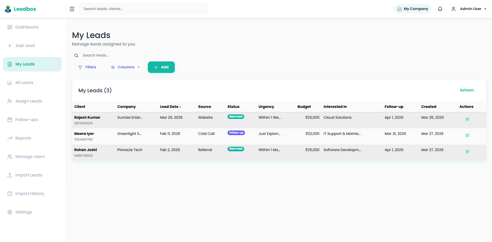
My Leads shows all leads assigned to you. Use the search and filter options to find specific leads.
- Click My Leads in the left menu.
- Use the Search box to find a lead by name, company, or phone number.
- Use Filters to narrow down leads by status, source, or date.
- Click Edit Lead next to any lead to update their information or add notes.
7.3 Viewing All Company Leads
All Leads shows every lead in your company — including leads added by your team members. This view is only available to Company Admins and Managers.
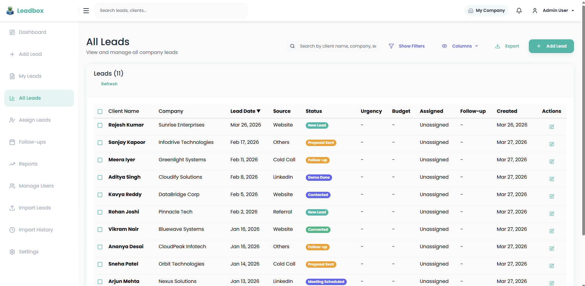
All Leads gives you a complete view of every lead in your company.
- Click All Leads in the left menu.
- You will see all leads from all team members in one place.
- Use Show Filters to filter by assigned team member, status, source, or date range.
- Click Export to download the leads as a spreadsheet file.
- Click Edit Lead next to any lead to make changes.
7.4 Assigning Leads to Team Members
When a new lead comes in, it is "unassigned" — no one is responsible for it yet. You can assign leads to your team members so they know who to follow up with.
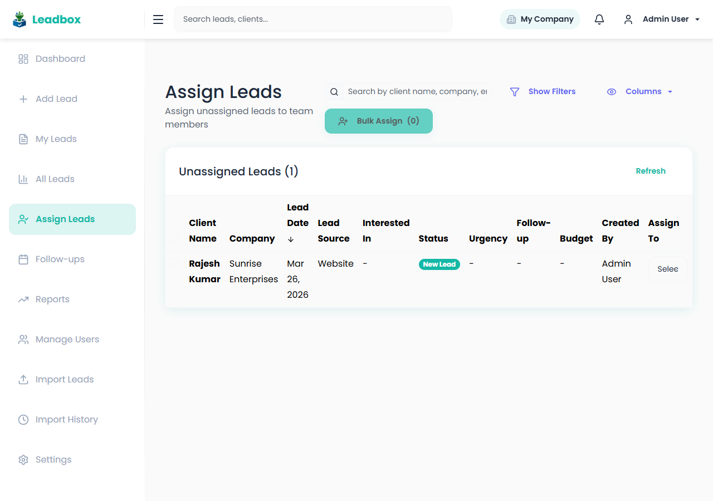
Assign Leads shows all unassigned leads. Use the dropdown next to each lead to assign them to a team member.
- Click Assign Leads in the left menu.
- You will see a list of all leads that have not been assigned to anyone yet.
- For each lead, click the Select user… dropdown in the "Assign To" column and choose a team member.
- To assign multiple leads at once, tick the checkboxes next to the leads you want and click Bulk Assign.
Follow-ups
A follow-up is a reminder to contact a lead again on a specific date. The Follow-ups page shows all scheduled follow-ups for your team so nothing falls through the cracks.
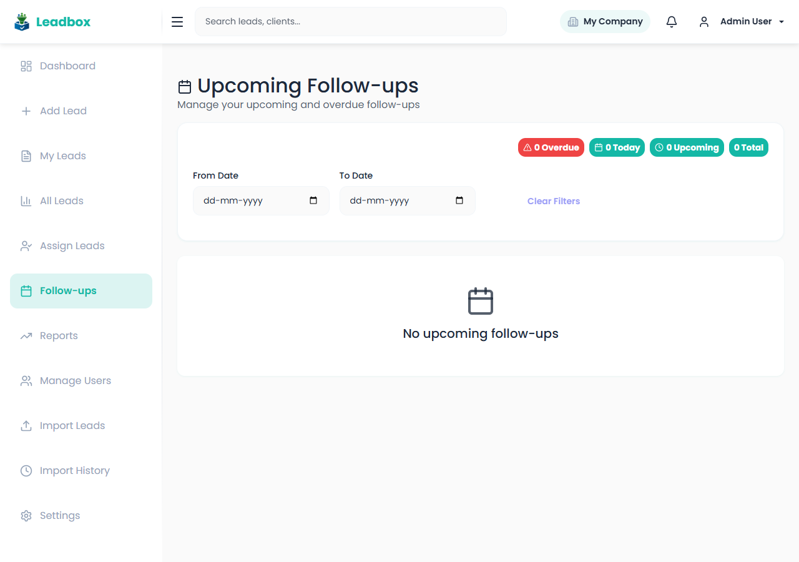
The Follow-ups page shows overdue, today's, and upcoming follow-ups in one place.
- Click Follow-ups in the left menu.
- You will see follow-ups grouped into Overdue, Today, and Upcoming.
- Use the From Date and To Date filters to view follow-ups for a specific time period.
- Click on a follow-up to open the lead and take action — call, mark as done, or reschedule.
Reports
Reports help you understand how your business is performing — how many leads are converting, where they are coming from, and how your team is doing.
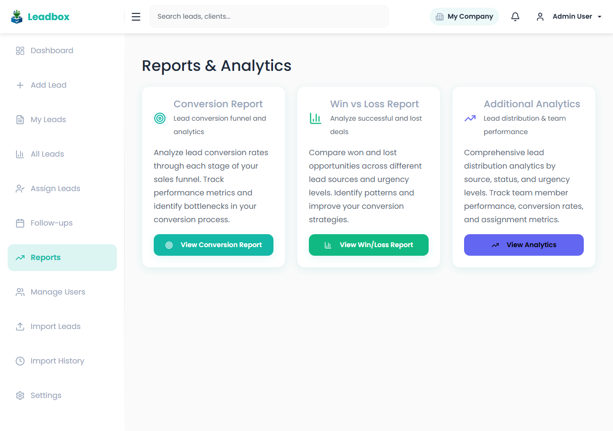
The Reports section gives you three types of detailed reports.
There are three reports available:
Conversion Report
Shows how many leads are moving through your sales stages and how many are converting into customers.
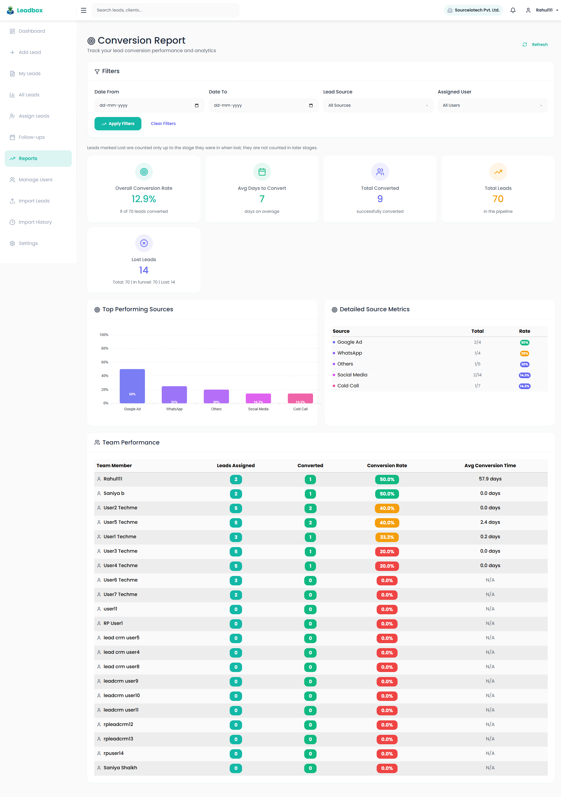
The Conversion Report shows your overall conversion rate and team performance.
Win vs Loss Report
Shows which leads were won (converted to customers) and which were lost, broken down by source and urgency.
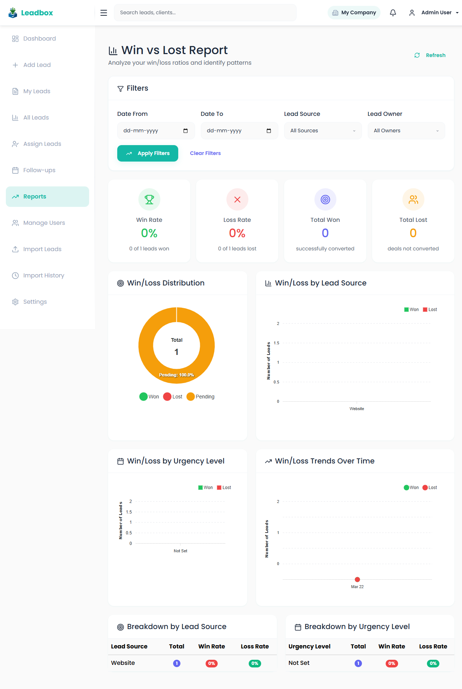
The Win vs Loss Report helps you understand what's working and what isn't.
Additional Analytics
A detailed report where you can search and filter all leads and export the results to a spreadsheet.
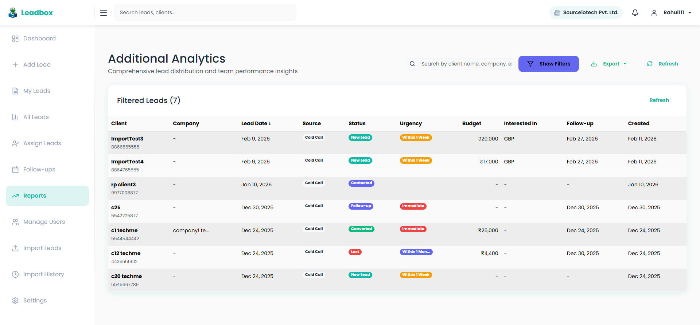
Use Additional Analytics to search and export leads based on any criteria.
- Click Reports in the left menu.
- Choose the report you want to view by clicking the corresponding button.
- Use the Filters (date range, source, assigned user) to narrow down the data.
- Click Apply Filters to update the charts.
Importing Leads in Bulk
If you have a large list of leads in a spreadsheet, you can upload them all at once instead of entering them one by one. This saves a lot of time.
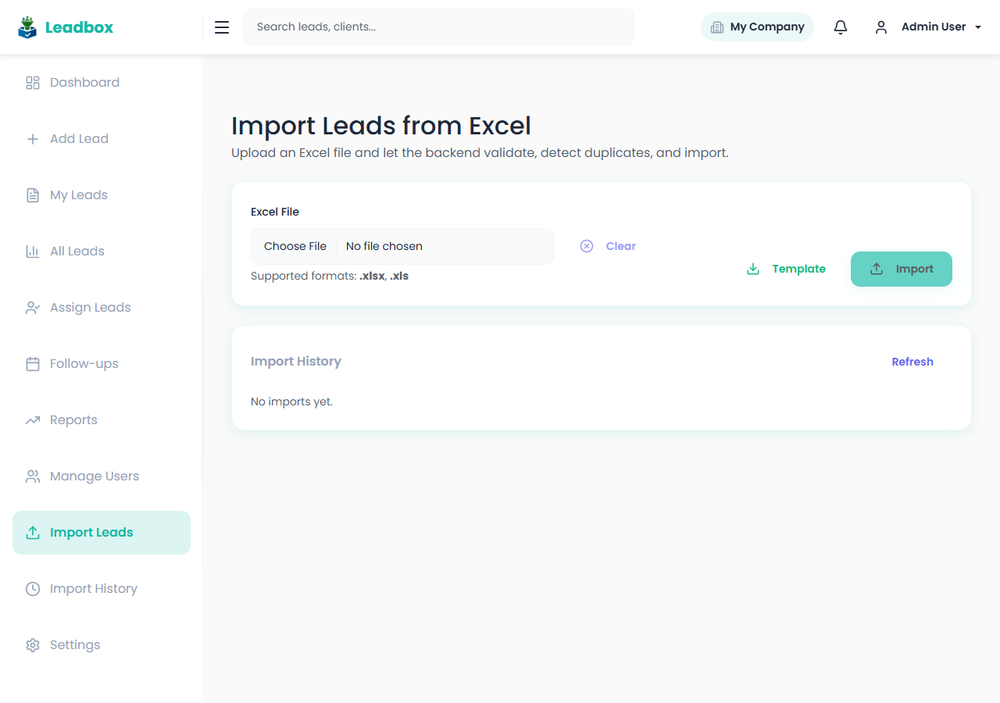
The Import Leads page lets you upload an Excel file with multiple leads at once.
- Click Import Leads in the left menu.
- Click Template to download a ready-made spreadsheet. Fill in your leads' details into this template.
- Once your spreadsheet is ready, click Excel File and select your file from your computer.
- Click Import to upload. Leadbox will automatically check for duplicates and errors.
Import History
You can see a record of all previous imports by clicking Import History in the left menu.
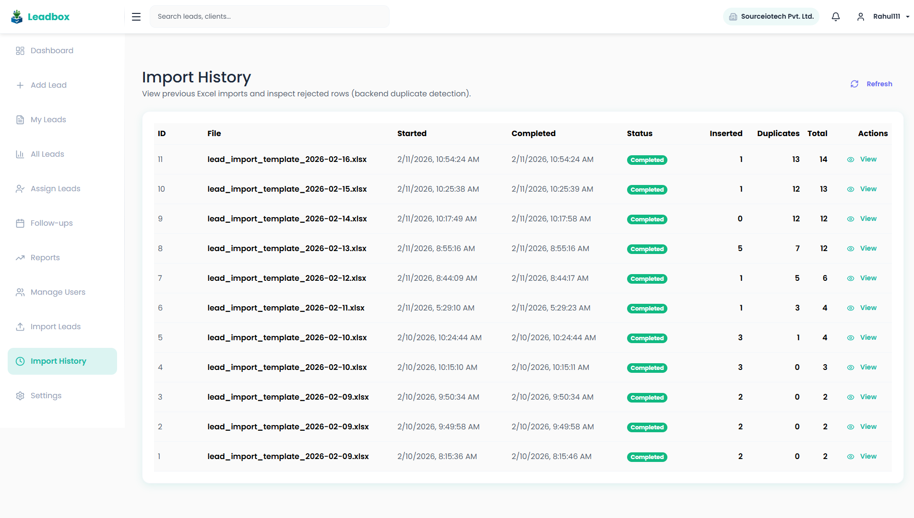
Import History shows all past bulk uploads and their status.
This page shows each import — when it was done, how many leads were imported, and if any rows were rejected. Click on any import to see which rows had errors and why.